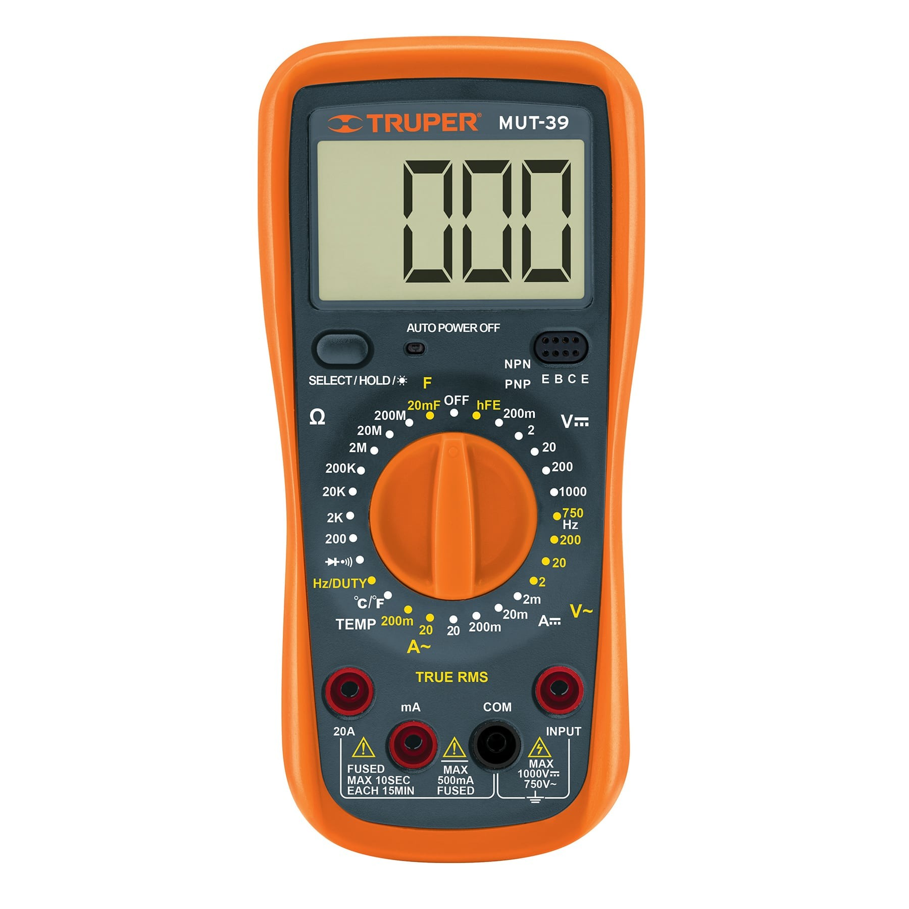
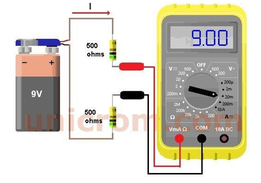

<!doctype html>
<html lang="en">
	<head>
		<meta charset="utf-8">
		<meta name="viewport" content="width=device-width, initial-scale=1.0, maximum-scale=1.0, user-scalable=no">

		<title>Análisis Vectorial</title>

		<link rel="stylesheet" href="dist/reset.css">
		<link rel="stylesheet" href="dist/reveal.css">
		<!-- <link rel="stylesheet" href="dist/theme/black.css"> -->
		<!-- <link rel="stylesheet" href="dist/theme/white.css"> -->
		<link rel="stylesheet" href="dist/theme/league.css">
		<!-- <link rel="stylesheet" href="dist/theme/beige.css"> -->
		<!-- <link rel="stylesheet" href="dist/theme/night.css"> -->
		<!-- <link rel="stylesheet" href="dist/theme/serif.css"> -->
		<!-- <link rel="stylesheet" href="dist/theme/simply.css"> -->
		<!-- <link rel="stylesheet" href="dist/theme/solarized.css"> -->
		<!-- <link rel="stylesheet" href="dist/theme/moon.css"> -->
		<!-- <link rel="stylesheet" href="dist/theme/dracula.css"> -->
		<!-- <link rel="stylesheet" href="dist/theme/sky.css"> -->
		<!-- <link rel="stylesheet" href="dist/theme/blood.css"> -->

		<!-- Theme used for syntax highlighted code -->
		<link rel="stylesheet" href="plugin/highlight/monokai.css">
	</head>
	<body>

	<script src="plugin/math/math.js"></script>

		<div class="reveal">
			<div class="slides">

<!-- ...................................................................................  -->
<!-- .........................Inicio de la presentación.................................  -->
<!-- ...................................................................................  -->
<section>
	<a href="https://revealjs.com">
	
	</a>
	<h4>EDUCACIÓN CONTINUA</h4>
	<h2>CURSO: ELECTRICIDAD BÁSICA</h2>
	<p>
	<small>Instructor <a href="https://franciscoruvalcaba.carrd.co/">Francisco Ruvalcaba Grandos</a>
	</small>
	</p>
</section>

	
				<section data-markdown
				data-separator="^---"
				data-separator-vertical="^\n"
				data-separator-notes="^Note:">
				<textarea data-template>
# Mediciones Eléctricas


Es importante ser capaz de medir los niveles de corriente y voltaje de un sistema eléctrico en operación para verificar su funcionamiento, aislar las disfunciones e investigar los efectos imposibles de predecir en documentos. Como sus nombres lo indican, los amperímetros se utilizan para medir niveles de corriente; con los voltímetros, se mide la diferencia de potencial entre dos puntos. En la industria, los niveles de voltaje se miden con más frecuencia que los niveles de corriente, sobre todo porque la medición de los primeros no implica perturbar las conexiones de la red. 
---
# Multímetro 


- El Multímetro, polímetro o tester es un aparato que sirve para medir voltios, amperios, ohmios y otras señales.
- Con un selector de perilla se selecciona la medición y escala a medir (en algunos modelos también hay que cambiar la posición de uno de los cables).  

La mayoría de las veces se usa como Voltímetro (para medir si hay tensión entre dos cables, o en un enchufe) o como Óhmetro para determinar la resistencia o ver si dos puntos están conectados (continuidad). Si están conectados es fácilmente de comprender ya que emite un sonido, esto significa que la resistencia es casi cero. 
---
# Medición de Voltaje 

La diferencia de potencial entre dos puntos se mide conectando los cables del medidor directamente en los dos puntos, como se indica en la Figura 11. Pasos:

1. Ubicar en la perilla el tipo de señal que vamos a medir: VCD (VDC) o VCA (VAC). Revisar que las puntas de medición estén colocadas adecuadamente para medir voltaje.  

2. Si el tipo de señal tiene un grupo de escalas, seleccionar la más alta o si se conoce el valor esperado, seleccionar la escala más inmediata superior a dicho valor.  

3. Colocar la punta roja (positivo) en una terminal o conexión del elemento y colocar la punta negra (negativo) en la otra. – Una lectura positiva se obtiene cuando el cable  

4. positivo se ha conectado al punto de mayor potencial de la red y el cable común o negativo al punto de menor potencial. La conexión inversa da por resultado una lectura negativa.  

NOTA: El procedimiento anterior se realiza para mediciones de baja potencia (600 V). Para potencias mayores, la medición se realiza con multímetro de gancho o medidor sin contacto y las medidas de protección adecuadas 
---
# Medición de corriente

Los amperímetros, o los multímetros con el selector ubicado en la sección de medición de corriente, se conectan como se muestra en la Figura.


Como los amperímetros miden el flujo de carga, el medidor debe colocarse en la red de modo que la carga fluya a través del medidor. 

Los pasos para realizar la medición de corriente son los siguientes:  
 
1.	Ubicar en la perilla el tipo de señal que vamos a medir: ACD (ADC) o ACA (AAC). Revisar que las puntas de medición estén colocadas adecuadamente para medir corriente.
- En la mayoría de los multímetros es necesario cambiar la terminal roja de posición. Identifique la conexión que mide corriente (A) y asegúrese que esté conectada la punta en esa terminal.  

2.	Si el tipo de señal tiene un grupo de escalas, seleccionar la más alta o si se conoce el valor esperado, seleccionar la escala más inmediata superior a dicho valor.  

3.	Para realizar la medición, es necesario abrir en el circuito en el punto de la trayectoria donde se va a medir la corriente del sistema y colocar el medidor entre las dos terminales desconectadas.  

NOTA: El procedimiento anterior se realiza para mediciones de baja potencia (máx 600VAC). Para potencias mayores, la medición se realiza con multímetro de gancho o medidor sin contacto y las medidas de protección adecuadas. 
---
# Medición de resistencia  

Normalmente, se toman las mediciones de resistencia para indicar las características de un componente o un circuito.  
Cuanto mayor sea la resistencia, menor será el flujo de corriente. Si es anormalmente alta, una causa posible (entre muchas) podrían ser los conductores dañados por el fuego o la corrosión. Todos los conductores emiten cierto grado de calor, por lo que el sobrecalentamiento es un problema que a menudo se asocia con la resistencia.  Cuanto menor sea la resistencia, mayor será el flujo de corriente. Causas posibles: aisladores dañados por la humedad o un sobrecalentamiento.  
Muchos componentes, tales como los elementos de calefacción y las resistencias, tienen un valor de resistencia fijo. Estos valores se imprimen a menudo en las placas de identificación de los componentes o en los manuales de referencia. 
Cuando se indica una tolerancia, el valor de resistencia debe encontrarse dentro de la gama de la resistencia especificada. Cualquier cambio significativo en un valor de resistencia fijo generalmente indica un problema.  
La "resistencia" puede parecer negativa, pero en la electricidad puede usarse beneficiosamente.  
Por ejemplo, la corriente debe luchar para fluir a través de las bobinas pequeñas de una tostadora, lo suficiente como para generar el calor que tuesta el pan. Las bombillas incandescentes antiguas fuerzan la corriente para que fluya a través de filamentos muy delgados y generen luz.  
 
NOTA: La resistencia no puede medirse en un circuito en funcionamiento. Para determinarla, es necesario medir la corriente y el voltaje que consume el elemento para determinar su resistencia. 
---
# Voltamperimetro de Gancho  

Un amperímetro de gancho es un dispositivo de medición eléctrica utilizado para medir la corriente eléctrica en un circuito sin necesidad de interrumpir el flujo de corriente. Este instrumento cuenta con una abertura en forma de gancho que rodea el conductor por el cual fluye la corriente, permitiendo una medición precisa y no intrusiva de la intensidad de la corriente eléctrica. 
Son herramientas comunes en el campo de la electricidad y la electrónica, facilitando la medición de corriente en cables y conductores sin necesidad de cortarlos o desenchufarlos, lo que los hace especialmente útiles para tareas de diagnóstico y mantenimiento en sistemas eléctricos y electrónicos. 

Los amperímetros de gancho, también conocidos como pinzas amperimétricas, son herramientas de medición eléctrica versátiles que se utilizan para medir corrientes eléctricas en circuitos sin necesidad de interrumpirlos. Existen varios tipos de amperímetros de gancho, cada uno diseñado para satisfacer necesidades específicas en diferentes aplicaciones: 
•	Amperímetros de gancho de corriente alterna (CA): Estos medidores están diseñados principalmente para medir corrientes eléctricas en circuitos de corriente alterna. Son ideales para trabajos de electricidad en el hogar, diagnóstico de problemas eléctricos y mantenimiento de sistemas de CA. 
Pueden proporcionar mediciones precisas de la corriente en forma de valor RMS (valor eficaz) y a menudo cuentan con una función de detección de voltaje sin contacto. 
•	Amperímetros de gancho de corriente continua (CC): A diferencia de los modelos de CA, estos amperímetros de gancho están diseñados específicamente para medir corriente continua. Son esenciales en aplicaciones como la industria automotriz, donde se requiere medir la corriente de baterías y circuitos de CC. Ofrecen lecturas precisas de la corriente continua y a menudo incluyen funciones adicionales, como pruebas de diodos y continuidad. 
•	Amperímetros de gancho de alta corriente: Estos modelos están diseñados para manejar corrientes eléctricas más altas que los amperímetros de gancho estándar. Son esenciales en aplicaciones industriales y de potencia, como la medición de corrientes en líneas de alta tensión o en sistemas de distribución de energía. 
•	Amperímetros de gancho especializados: Además de los tipos mencionados, existen amperímetros de gancho especializados para aplicaciones específicas. Por ejemplo, algunos están diseñados para medir corriente en aplicaciones de energía solar o para detectar fugas de corriente en sistemas eléctricos. 
La elección del tipo de amperímetro de gancho dependerá de la aplicación y el tipo de corriente eléctrica que se desee medir. Estos dispositivos ofrecen una forma conveniente y precisa de realizar mediciones. Esto los convierte en herramientas indispensables para electricistas, técnicos y profesionales de la industria. 

 
				</textarea>
				</section>
				
				<section data-auto-animate data-auto-animate-easing="cubic-bezier(0.770, 0.000, 0.175, 1.000)">
					<div class="r-stack justify-center">
						<div data-id="box1" style="background:    salmon; width: 100px; height: 100px; margin: 0px; border-radius: 0px;"></div>
						<div data-id="box2" style="background:    salmon; width: 100px; height: 100px; margin: 0px; border-radius: 0px;"></div>
						<div data-id="box3" style="background:    salmon; width: 100px; height: 100px; margin: 0px; border-radius: 0px;"></div>
						<div data-id="box4" style="background:    salmon; width: 100px; height: 100px; margin: 0px; border-radius: 0px;"></div>
						<div data-id="box5" style="background:    salmon; width: 100px; height: 100px; margin: 0px; border-radius: 0px;"></div>
						<div data-id="box6" style="background:    salmon; width: 100px; height: 100px; margin: 0px; border-radius: 0px;"></div>
						<div data-id="box7" style="background:    salmon; width: 100px; height: 100px; margin: 0px; border-radius: 0px;"></div>
						<!-- <div data-id="box" style="background: dodgerblue; width: 100px; height: 100px; margin: 0px; border-radius: 0px;"></div> -->
					</div>
					
				</section>
				<section data-auto-animate data-auto-animate-easing="cubic-bezier(0.770, 0.000, 0.175, 1.000)">
					<div class="r-stack justify-center">
						<div data-id="box1" style="background:    salmon; width: 1500px; height: 3px; margin: 0px; border-radius: 0px;"></div>
						<div data-id="box2" style="background:    salmon; width: 1500px; height: 3px; margin: 0px; border-radius: 0px;"></div>
						<div data-id="box3" style="background:    salmon; width: 1500px; height: 3px; margin: 0px; border-radius: 0px;"></div>
						<div data-id="box4" style="background:    salmon; width: 1500px; height: 3px; margin: 0px; border-radius: 0px;"></div>
						<div data-id="box5" style="background:    salmon; width: 1500px; height: 3px; margin: 0px; border-radius: 0px;"></div>
						<div data-id="box6" style="background:    salmon; width: 1500px; height: 3px; margin: 0px; border-radius: 0px;"></div>
						<div data-id="box7" style="background:    salmon; width: 1500px; height: 3px; margin: 0px; border-radius: 0px;"></div>
					</div>
				</section>
				<section data-auto-animate data-auto-animate-easing="cubic-bezier(0.770, 0.000, 0.175, 1.000)">
					<div class="r-vstack justify-center">
						<div data-id="box1" style="background:    salmon; width: 1500px; height: 3px; margin: 5px; border-radius: 0px;"></div>
						<div data-id="box2" style="background:    salmon; width: 1500px; height: 3px; margin: 5px; border-radius: 0px;"></div>
						<div data-id="box3" style="background:    salmon; width: 1500px; height: 3px; margin: 5px; border-radius: 0px;"></div>
						<div data-id="box4" style="background:    salmon; width: 1500px; height: 3px; margin: 5px; border-radius: 0px;"></div>
						<div data-id="box5" style="background:    salmon; width: 1500px; height: 3px; margin: 5px; border-radius: 0px;"></div>
						<div data-id="box6" style="background:    salmon; width: 1500px; height: 3px; margin: 5px; border-radius: 0px;"></div>
						<div data-id="box7" style="background:    salmon; width: 1500px; height: 3px; margin: 5px; border-radius: 0px;"></div>
					</div>
				</section>
				<section>ok</section>
				<section></section>
				<section></section>
				<section></section>
				<section></section>
			</div>
		</div>

		<script src="dist/reveal.js"></script>
		<script src="plugin/notes/notes.js"></script>
		<script src="plugin/markdown/markdown.js"></script>
		<script src="plugin/highlight/highlight.js"></script>
		<script>
			// More info about initialization & config:
			// - https://revealjs.com/initialization/
			// - https://revealjs.com/config/
			Reveal.initialize({
				hash: true,

				// Learn about plugins: https://revealjs.com/plugins/
				plugins: [ RevealMarkdown, RevealHighlight, RevealNotes,RevealMath.KaTeX ]
			});
		</script>
	</body>
</html>
